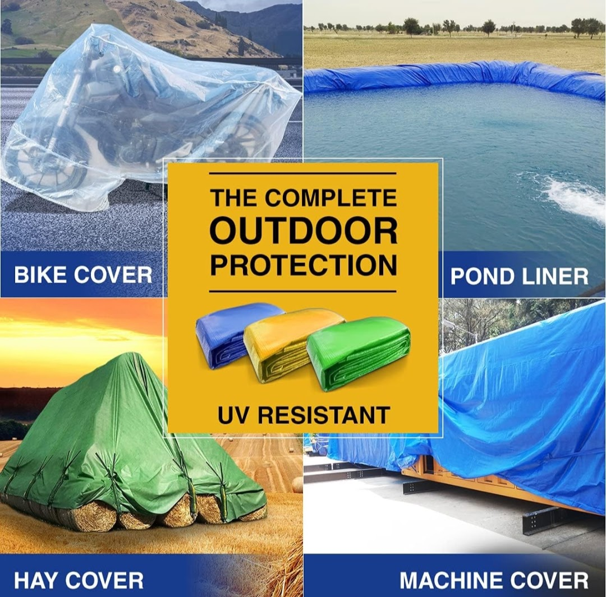
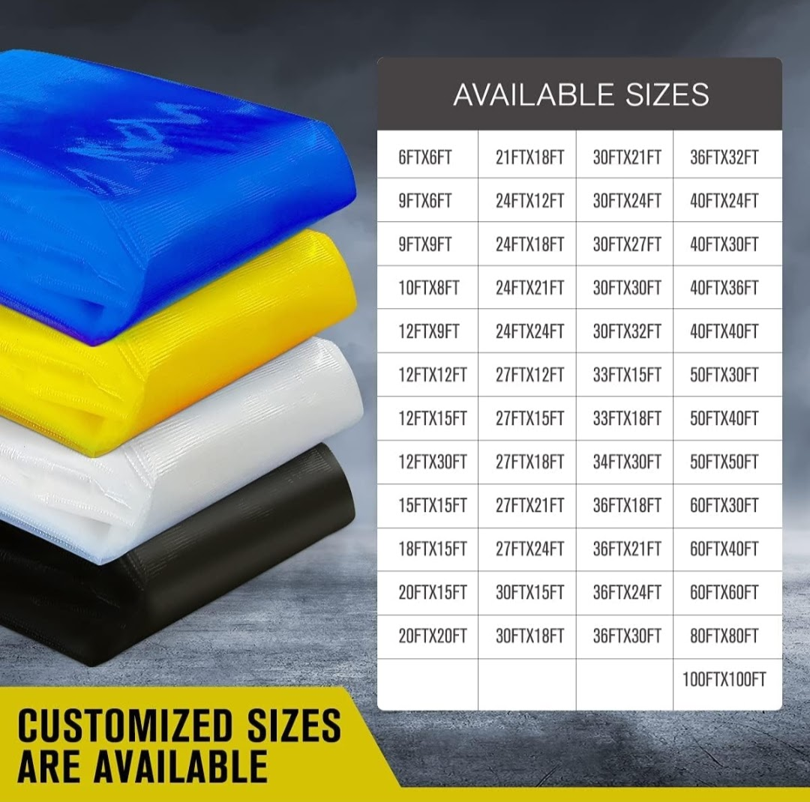
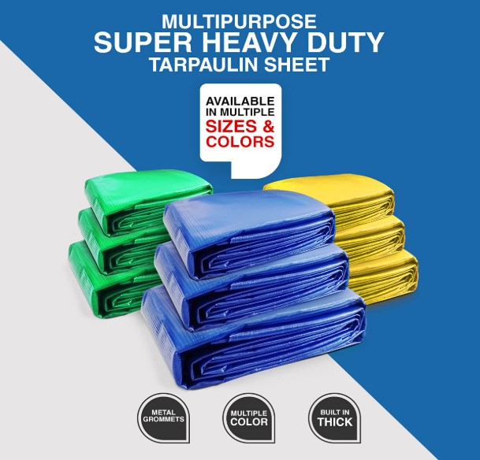
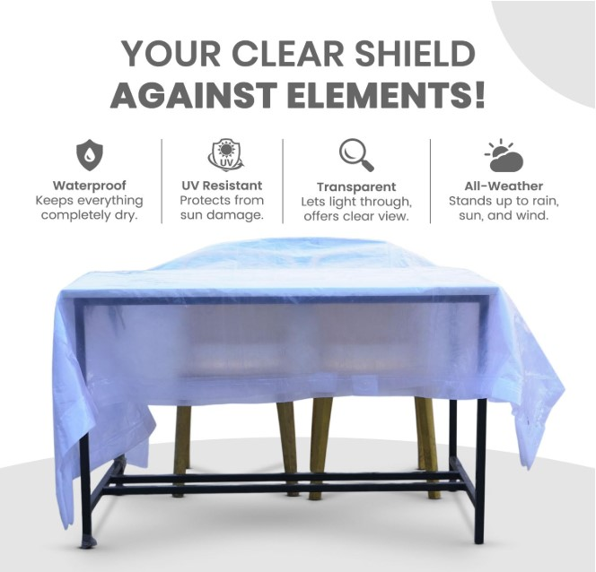
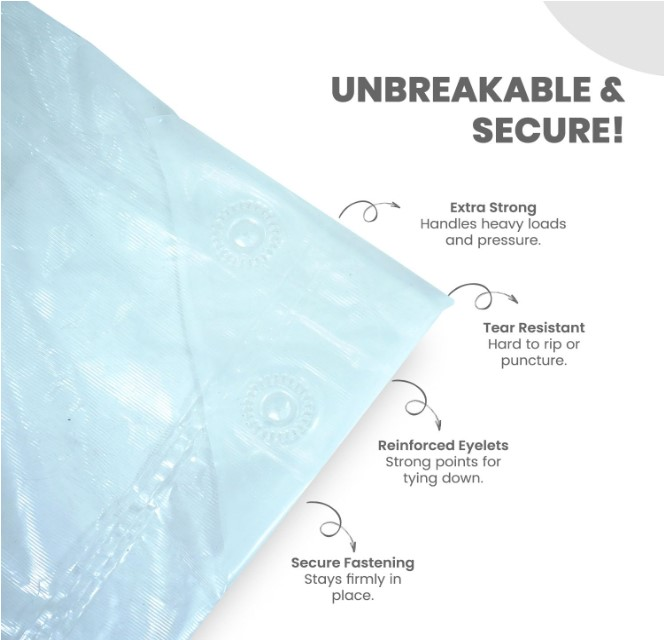
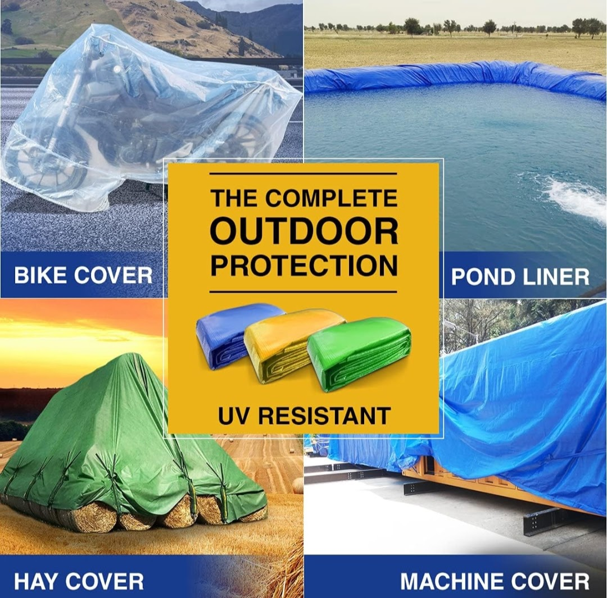
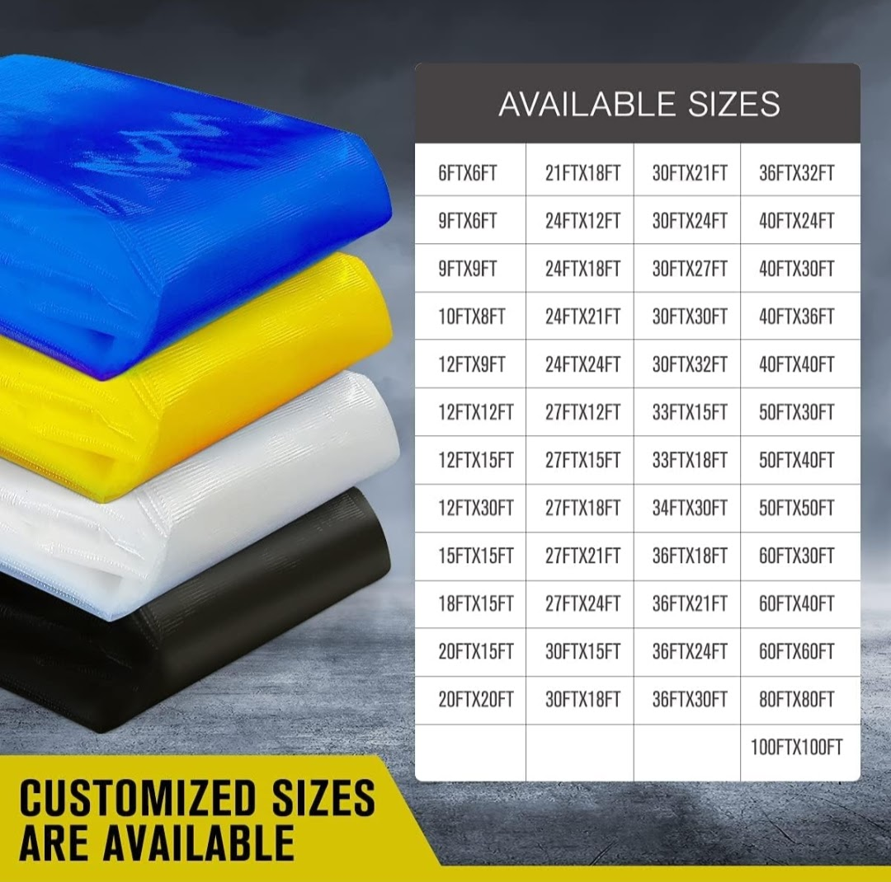
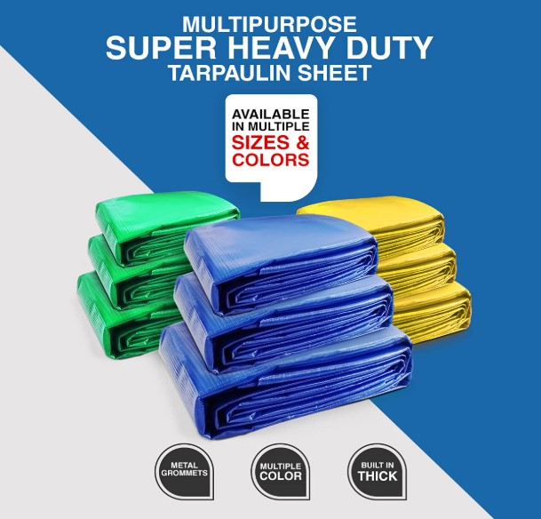
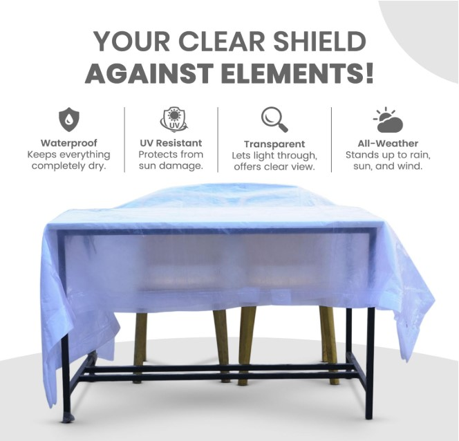
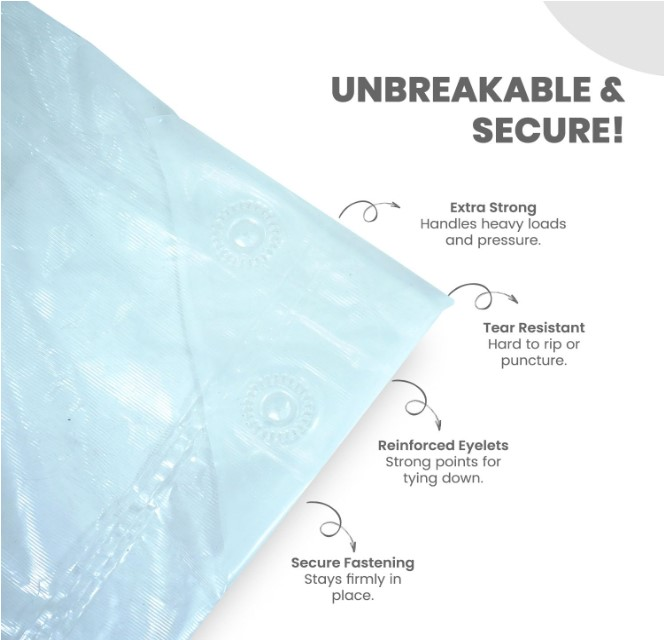

Product Overview
Cross Lamination Tarpaulins are manufactured using advanced
cross-laminated polyethylene layers, resulting in superior
tear resistance, tensile strength, and waterproof performance.
These tarpaulins outperform conventional woven tarps in
demanding environments.
Designed for long-term outdoor use, they provide reliable
protection against rain, sunlight, dust, and harsh weather
conditions across industrial, agricultural, and commercial
applications.
Key Features
- High tear and puncture resistance
- 100% waterproof and weatherproof
- Excellent UV resistance for outdoor use
- Lightweight yet extremely strong construction
- Long service life compared to standard tarpaulins
Specifications
- Material: Cross Laminated Polyethylene (PE)
- GSM Range: 100 GSM to 250 GSM (approx.)
- Finish: UV Stabilized, Waterproof
- Sizes: Standard & custom sizes available
- Colours: Blue, Green, White, Black (varies)
- Usage: Indoor and outdoor protection
Applications & Use Cases
- Industrial material covering
- Agricultural crop and equipment protection
- Construction sites and scaffolding covers
- Warehouse and storage protection
- Transportation and logistics covering
Best Suited For
- Long-term outdoor covering exposed to sun and monsoon rain
- Transporters and warehouses handling rough or repeated use
- Sites where conventional tarpaulins fail due to tearing
Selection Note
For Indian conditions, higher GSM tarpaulins are recommended for
highway transport, construction sites, and extended outdoor exposure.
Proper edge reinforcement and tying are critical for wind resistance.
Commonly Used Along With
- Ropes or Lashing Belts for secure tying
- Tarpaulin Eyelets for reinforced edges
- Ground Sheets or Floor Protection Sheets
Product FAQs
-
How is cross lamination tarpaulin different from regular tarpaulin?
Cross lamination tarpaulins use multi-directional laminated layers,
providing higher tear resistance and strength compared to conventional woven tarpaulins.
-
Is cross lamination tarpaulin suitable for Indian monsoon conditions?
Yes. These tarpaulins are fully waterproof and UV stabilized,
making them suitable for heavy rain, humidity, and strong sunlight.
-
What GSM should be selected for long-distance transport?
Higher GSM variants are recommended for highway transport
and repeated loading to withstand wind pressure and abrasion.
-
Can these tarpaulins be used for permanent outdoor covering?
Yes. Cross lamination tarpaulins are designed for long-term outdoor use
and offer better durability than standard plastic tarps.
-
Are custom sizes and eyelets available?
Yes. Custom sizes with reinforced edges and eyelets can be supplied
based on application requirements.
-
Do cross lamination tarpaulins crack or harden over time?
High-quality UV stabilized tarpaulins resist cracking and maintain flexibility
longer than standard tarpaulins under outdoor exposure.
 








